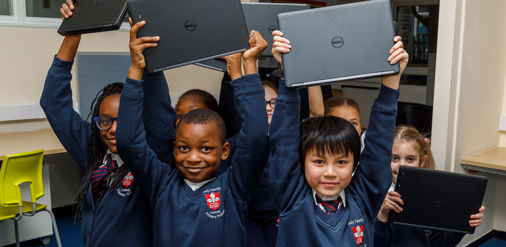
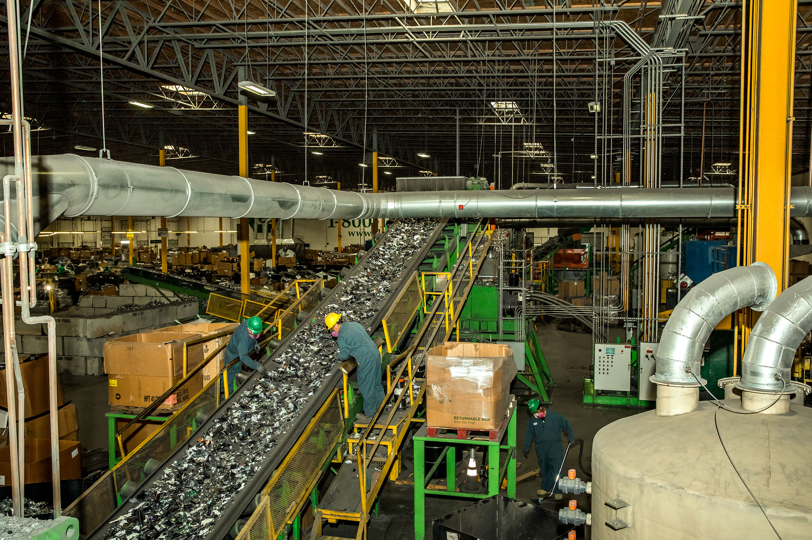
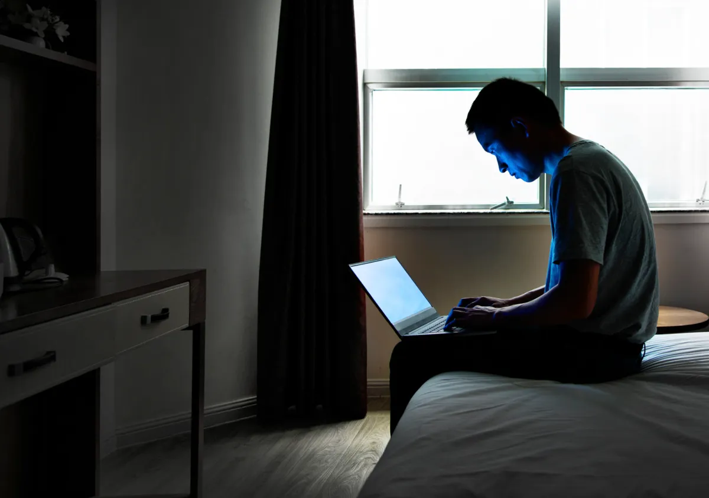

Recuperamos, reparamos y distribuimos tecnología donde más se necesita,
transformando donaciones de componentes en oportunidades de formación y conectividad
para comunidades locales.

PCs restauradas

Empresas donantes

Escuelas beneficiadas

E-waste rescatado
Creemos en la tecnología como un medio fundamental para transformar Latinoamérica en una región más justa, equitativa e inclusiva.
Coordinamos y potenciamos iniciativas existentes y generamos proyectos propios enfocados en los usos educativos de la tecnología. Así, impulsamos una comunidad profesional y audaz que trabaja para multiplicar la transformación y el conocimiento útil sobre la inclusión digital.
Operamos actualmente en Argentina (Redes de Reciclaje Sustentable), Colombia (Aulas Digitales Libres), Uruguay (Ecosistema Circular), México (Tecnología Para Todos), con planes inmediatos de expansión a otros países de la región y el mundo.

Transformar residuos electrónicos en oportunidades educativas mediante la restauración de hardware solidario, acortando la brecha digital y promoviendo la economía circular en nuestras comunidades.
Fundación Desarrollo nace con el propósito central de reactivar tecnología para conectar personas con su futuro. Ante una realidad donde los residuos electrónicos (e-waste) representan uno de los mayores focos de contaminación global, y donde miles de estudiantes carecen de las herramientas básicas para integrarse al mundo digital, nuestra organización actúa como un puente logístico y técnico.Recolectamos equipos obsoletos o en desuso del sector corporativo, los reparamos minuciosamente en nuestro taller profesional y los redistribuimos en centros comunitarios y escuelas rurales. De esta manera, garantizamos una gestión ambientalmente responsable para las empresas y una infraestructura tecnológica real para la formación y el empleo del mañana.

Nuestra campaña solidaria distribuye computadoras recuperadas a familias vulnerables para asegurar su continuidad pedagógica. Los técnicos configuran entornos educativos abiertos, permitiendo que los niños accedan a herramientas informáticas críticas para su escuela, rompiendo barreras económicas y fomentando la equidad digital en los barrios populares de nuestra querida provincia.

Instalamos nodos de recolección urbana para gestionar residuos tecnológicos obsoletos mediante normas estrictas de economía circular. Los voluntarios clasifican carcasas plásticas y componentes químicos peligrosos, evitando la contaminación crítica de los suelos locales y transformando la chatarra dañada en verdaderos recursos sustentables para la comunidad regional asi poder conseguir el objetivo comun.

Este programa social financia abonos mensuales de internet para alumnos de niveles secundarios y universitarios que cursan a distancia. La iniciativa cubre redes inalámbricas estables, garantizando la entrega a término de trabajos prácticos complejos y reduciendo drásticamente la deserción escolar por falta de recursos económicos en los hogares a lo largon de este tiempo.


Trabajamos para transformar la tecnología en una herramienta de inclusión y desarrollo sostenible. Mediante la recuperación de equipos y programas educativos, dotamos a las futuras generaciones de las habilidades digitales necesarias para el mundo actual, promoviendo la reducción del impacto ambiental.